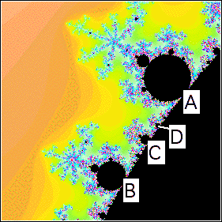

| 12. The disc A coresponds to a 7-cycle, as seen by counting its spokes. |
|  |
| In the same way, the disc B corresponds to a 9-cycle. |
| We cannot see the spokes of C, but instead we use the Farey sequence to conclude this disc corresponds to a 7 + 9 = 16-cycle. |
| Apply the Farey sequence again to conclude the disc D corresponds to a 7 + 16 = 23-cycle |
Return to Homework 10 Practice.